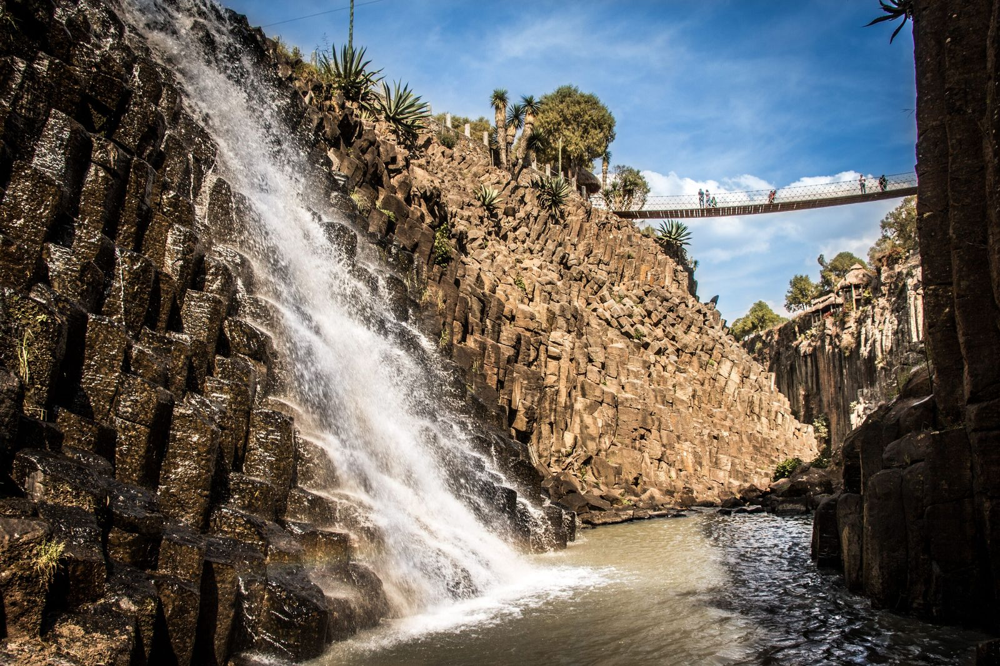
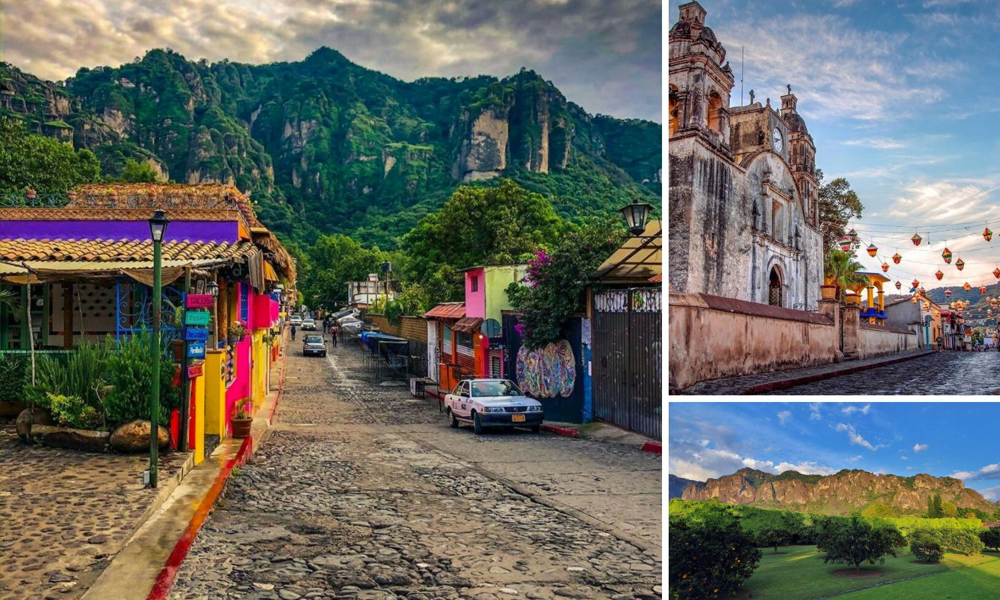
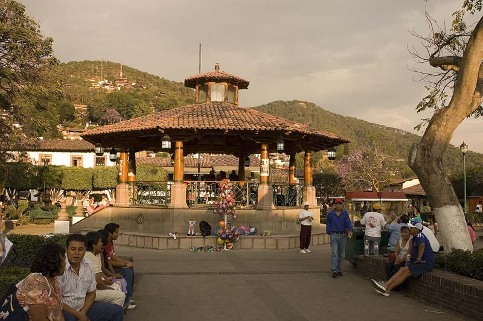
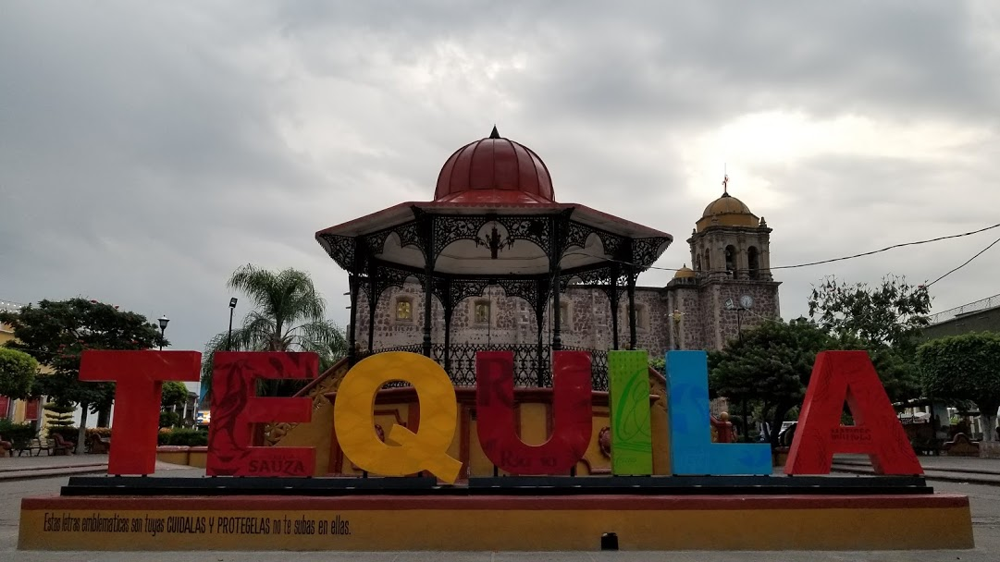
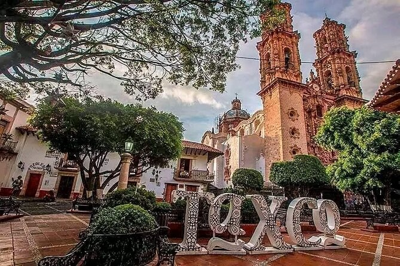
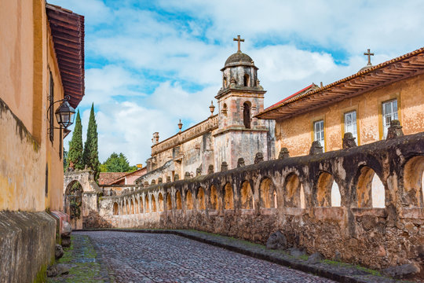

Es un encantador Pueblo Mágico de Hidalgo, famoso por sus paisajes naturales, calles pintorescas y arquitectura tradicional. Entre sus principales atractivos destacan los Prismas Basálticos, los bosques y las antiguas haciendas, que hacen de este destino un lugar ideal para disfrutar de la naturaleza, la historia y la tranquilidad.
Last updated 3 mins ago

Es un hermoso Pueblo Mágico de Morelos, reconocido por sus paisajes montañosos, calles empedradas y ambiente lleno de tradición. Su principal atractivo es el cerro del Tepozteco, además de sus mercados, gastronomía y artesanías, que hacen de este destino un lugar ideal para disfrutar de la cultura, la naturaleza y la historia.
Last updated 3 mins ago

Es un encantador Pueblo Mágico rodeado de bosques y montañas, famoso por su hermoso lago y sus paisajes naturales. Sus calles empedradas, arquitectura tradicional, gastronomía y actividades al aire libre lo convierten en un destino ideal para relajarse, disfrutar de la naturaleza y vivir una experiencia llena de aventura y tranquilidad.
Last updated 3 mins ago

Es un Pueblo Mágico de Jalisco reconocido mundialmente por ser la cuna de la tradicional bebida que lleva su nombre. Sus paisajes de agave, antiguas haciendas, destilerías y calles llenas de historia ofrecen una experiencia única para conocer la cultura, gastronomía y tradiciones de México.
Last updated 3 mins ago

Es un encantador Pueblo Mágico de Guerrero, famoso por sus calles empedradas, casas blancas y hermosa arquitectura colonial. Destaca por su tradición en la elaboración de joyería de plata, sus iglesias históricas y sus pintorescos paisajes, convirtiéndolo en un destino ideal para conocer la cultura y el arte de México.
Last updated 3 mins ago

Es un Pueblo Mágico de Michoacán conocido por su arquitectura colonial, sus calles empedradas y sus profundas tradiciones indígenas. Sus plazas, artesanías, gastronomía y celebraciones del Día de Muertos reflejan la riqueza cultural de la región, convirtiéndolo en un destino lleno de historia, color y tradición.
Last updated 3 mins ago